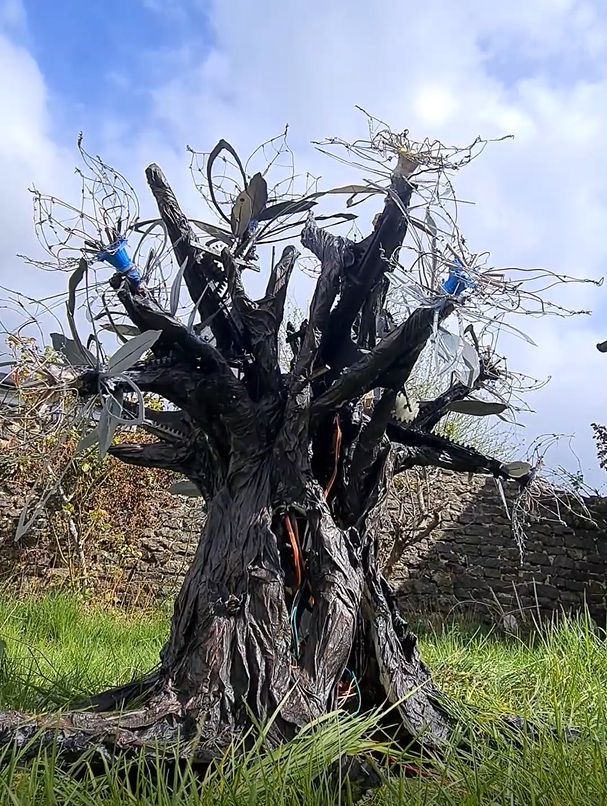
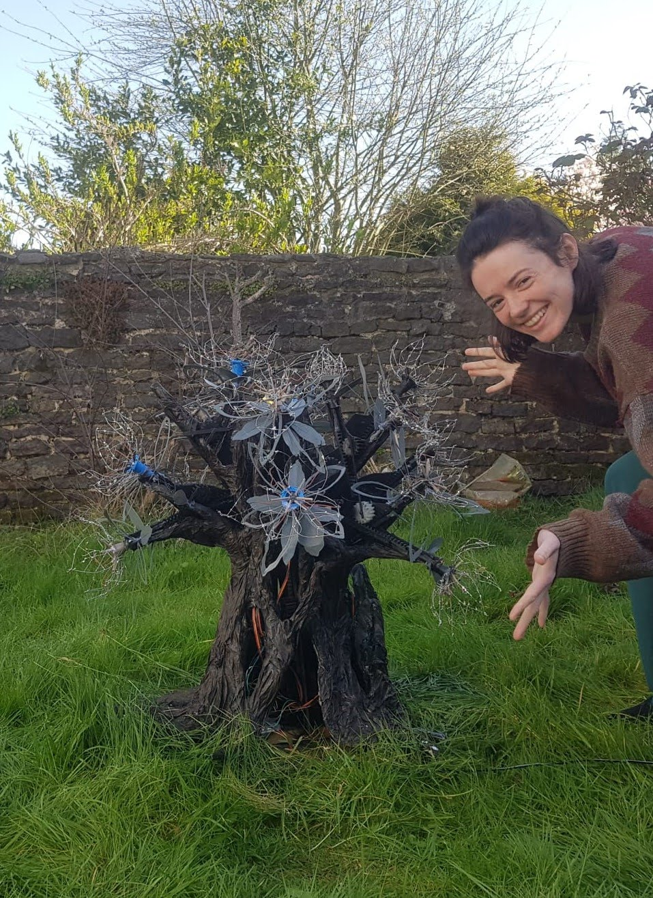

Tick, Tick, Bloom, 2022
A mechanical sculptural blooming flower tree, using arduino, servos and 3d printed cogs.
This tree was a continuation of the blossom branch, my graduating degree show piece from Goldsmiths, 2020. I had an itch to scratch when the tree wasn’t able to be made due to the pandemic cutting my final year short. This project has been a slow burn, a constant, tethering me to the arts while trying to navigate job finding amidst virus and the lockdowns. As the world opens up, I’m finally able to let the tree go, a final push to finish it and another to perhaps exhibit it soon to come.


